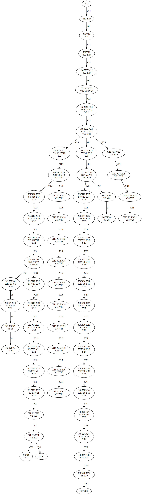
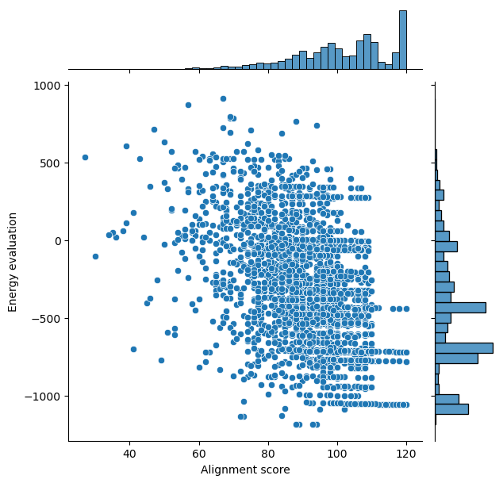
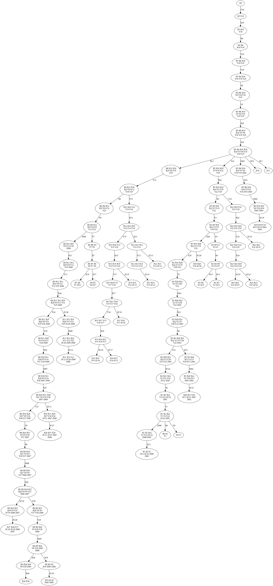

Online resources and software environment
This document is hosted online as Jupyter notebook with precomputed results. Download this file to view, edit and run examples in Jupyter.
We recommend to install all required software using Mamba (or Conda) and PIP.
mamba create -n infrared -c conda-forge infrared jupyter jupytext matplotlib seaborn graphviz
mamba activate infrared
pip install graphviz
mamba deactivate infrared
Start the Jupyter notebook server after activating the environment
mamba activate infrared
jupyter notebook
The original sources are part of the Infrared distribution and hosted on Gitlab (in Jupytext light Script format).
The alignment problem
We demonstrate LicoRNA-style alignment in Infrared. The code models and solves a variant of the pairwise RNA structure alignment where a potentially crossing secondary structure is given for the first sequence; it is aligned against the 'plain' second sequence. The alignment score captures correlated matches to the ends of base pairs. The model furthermore supports affine gap cost.
Definition: RNA structure alignment 'CROSSING/PLAIN'. Given two sequences and a crossing structure of the first one, find the best pairwise alignment subject to the alignment score, consisting of
- position dependent base similarity
- affine gap cost
- similarity of base pair matches, depending on the base pair and the positions in the second sequence that are matched to the base pair ends
Note: The standard CTE evaluation by Infrared does not handle "smooth bags" optimally. Since we compute banded alignments, this multiplies run-time by the banding width.
import infrared as ir
import infrared.rna as rna
import treedecomp
import math
import time
import RNA
Problem input and test instances
We define several test instances. Each one is specified by two sequences \(a\) and \(b\) and a structure \(s\) for \(a\). The structure can be crossing! It is specified in extended dot-bracket notation.
ex_small = dict(\
a = "ACGGUC",
s = "(([))]",
b = "UUGCAG")
ex_small2 = dict(\
a = "AAAACAUAG",
s = "..(.[.).]",
b = "AGAUACUAU")
ex_small3 = dict(\
a = "AAAACAGAUAGAC",
s = "..(.[.{.).].}",
b = "AGAUACAGAAAC")
ex_simple_crossing = dict(\
a = "CGCCAAUACAAUAGGGUUUAU",
s = "(.((.[[[.....)))..]]]",
b = "GCGCAAACAAGCGAAUUUUAA")
ex_simple_crossing2 = dict(\
a = "GGCGCCAAUAUCCAAUAGGGUCCUGGUAU",
s = "(((.((.[[[[[.....)))))..]]]]]",
b = "GGCCCAUAUUCAAAUAAGGGACCUGGUCAU")
ex_intermediate = dict(\
a = "CGCCAAUAAUAGGGUUUAU",
s = "(.(([[.[{{.)))]]]}}",
b = "GCGCAAACAAGCGAAUUUUU")
ex_licorna_RF01099 = dict(\
a = "UUCCAGGACAUACUGCUGAGGAUGUCAAAAAUGCAGUUGGAGUCCUCA",
s = ".<<<<<...........((((((.............>>>>>)))))).",
b = "UUCCAGGACAUACUGAUGAGAAUGUCAAAGAUGCAGUUGGGGUCCUCA")
ex_licorna_RF01831 = dict(\
a = "UCAGAGUAGAAAACGAUGCGUUAAGUGUCCAGCAGACGGGGAGUUGCUGCCGGAACGAAAAGCAAAGCUUGCGGUAUCGUUUUCGCAUCCCGCUGA",
s = "<<<<....<<<<<<<<<<<.....<<.<<<.<<<<...(((.((..>>>>.>>>>>...<<<<...>>>>...>>>>>>>>>>>)).)))..>>>>",
b = "GCAGAGUAGACACAUGUGCGUUAAGUGCCGGAUGAACAGGGAGUUGUCACCCGGACGAAAAGAAAAUCUUGCGGUACAUGAGUCGCAUCCCGCUGC")
ex_licorna_RF01786 = dict(\
a = "CCCCGGAAACAAAAACGAAUGUGAAUGGGUUGGGCAUGGGCACUAGACUCAUUUUGUGUUGCAAGUGCACCCGA",
s = "............((((.....((((((((((.....<[[[[[[[.))))))))))..)))...]]]]]>.]].)",
b = "ACUGCAAUGGGUGUGAUGAAGUCCGGACAGUAAUGUGGGCACUUAGUCCGGACCGAGCAAGUAGUGCAACCGACCAGAUGCAAA")
Specialized tree decomposition
Note: this section is not directly part of modeling alignments, we introduce experimental functionality that will likely become part of he Infrared library.
Different tree decomopositions of the same tree width can result in practically relevant performance differences of Infrared's evaluation. This is even true when all variables have the same domain size, but it becomes even more critical, when variables have strongly different sizes (e.g. some variables are boolean, while the size of others is linear in the problem input).
NXOptDspTDFactory implements a heuristic form of tree decomposition that chooses the td with minimal product of domain sizes from a series of tree decompositions, which are heuristically produced to minimize tree width. In the case of equal domain sizes, the objective minimal tree width and minimal sum over domain size product is an adequate estimator of the run-time of the evaluation by CTE. In the case of strongly different domain sizes, there is generally no guarantee that the optimal sum of domain size products is achieved for minimal treewidth. (In practice, the proposed strategy is still preferable over standard tree decomposition.)
We try to adapt the search time to the problem complexity; in order to safe over-all computation time, it pays off to optimize harder for harder instances.
This code should be generalized and moved into the tree decomposition module.
class NXOptDspTDFactory(treedecomp.NXTreeDecompositionFactory):
"""
Treedecomp factory that optimizes the sum of domain size products over
tree decompositions generated by NXTreeDecompositionFactory
"""
def __init__(self, model, verbose = False):
super().__init__(iterations=1, adaptive=None)
self._model = model
self._optdsp_verbose = verbose
def create(self, size, dependencies):
best_domsizeprod = None
i=0
while True:
i+=1
td = super().create(size, dependencies)
tw = td.treewidth()
bags = td.get_bags()
import math
domsizeprod = sum(math.prod( self._model.domains[x].size() for x in bag ) for bag in bags)
if best_domsizeprod==None or domsizeprod < best_domsizeprod:
best_domsizeprod = domsizeprod
best_td = td
thresh = 33 * 1.5**(domsizeprod/3e8)
if i > thresh:
break
if self._optdsp_verbose:
print( "After iteration",i,": Treewidth:",tw,end=", ")
print( f"Domain size product sum: {best_domsizeprod:.2e}" )
return best_td
class ConstTDFactory:
"""TD factory returning a constant TD
Allows to pass and reuse an already computed TD
"""
def __init__(self,td):
self._td = td
def create(self,_size,_dependencies):
return self._td
Showing information on the tree decomposition
Note: this section is not an essential part of modeling alignments. It is included for demonstration purposes. We also introduce some experimental functionality that will likely become part of he Infrared library.
Code to display 'internal' information on the generated td for demonstration purposes.
Note: the function performs a Monkey patch on TreeDecomposition. This code should be generalized and moved to treedecomp
def show_td_info(engine,width=600):
"""
Show information on tree decomposition
Args:
engine An Infrared engine (Optimizer, Sampler, ...)
width width of td plot
Draws the tree decomposition and prints some information (tree width, bag sizes...)
"""
td = engine.td
model=engine._model
index_to_namedvar=[]
varnames = list(model._domains.keys())
for name in varnames:
num = model.num_named_variables(name)
for idx in range(num):
index_to_namedvar.append( f"{name}{idx}" )
from treedecomp import TreeDecomposition
def writeTD(self, out):
from math import sqrt, ceil
def baglabel(bag):
if len(bag) == 0:
return ""
lwidth = ceil(sqrt(len(bag)))
lnum = ceil(len(bag) / lwidth)
xs = [index_to_namedvar[i] for i in sorted(bag)]
lines = list()
for i in range(0, lnum):
lines.append(" ".join(xs[i*lwidth:(i+1)*lwidth]))
return "\\n".join(lines)
out.write("digraph G {\n\n")
for bagid, bag in enumerate(self._bags):
label = baglabel(bag)
out.write("\tbag{} [label=\"{}\"]\n".format(bagid+1, label))
out.write("\n\n")
for (x, y) in self._edges:
edgelabel = " ".join(
[index_to_namedvar[x] for x in self.diff_set(self._bags[x], self._bags[y])])
out.write(
"\tbag{} -> bag{} [label=\"{}\"]\n".format(x+1, y+1,
edgelabel))
out.write("\n}\n")
orig_writeTD = TreeDecomposition.writeTD
TreeDecomposition.writeTD = writeTD
print("tree width =", td.treewidth())
bags_w_names = [[ index_to_namedvar[x] for x in bag] for bag in td.bags]
tmpfile="tmp_out.png"
engine.plot_td(tmpfile,'png')
TreeDecomposition.writeTD = orig_writeTD
from IPython.display import Image
return Image(filename=tmpfile,width=width)
Represent alignments as objects
As preparation, defining classes for representing alignments. This class is introduced for working with alignments in Infrared more conveniently. (For example, it translates from the internal representation of alignments to a more human-readable form.)
def is_compl(x,y):
return (x+y) in ["AU","CG","GC","GU","UA", "UG"]
class Alignment:
def __init__( self, assignment, a, s, b ):
self._a = a
self._s = s
self._b = b
self._assignment = assignment
self._values = assignment.values()
self._edges = self._values_to_edges(self.values[:len(a)+2])
@ property
def values(self):
return self._values
@ property
def edges(self):
return self._edges
@ staticmethod
def _values_to_edges(values):
edges = list()
for x,x1 in zip(values,values[1:]):
edges.append(x1-1 if x<x1 else -1)
edges = edges[:-1]
return (edges)
@ property
def induced_structure(self):
return self._alignment_strings()[3].replace("-","")
def _alignment_strings(self):
s = list()
b = list()
a = list()
t = list()
for i,(x,x1) in enumerate(zip(self._values,self._values[1:])):
if x<x1:
for j in range(x,x1-1):
a.append('-')
s.append('-')
b.append(self._b[j])
if i<len(self._a):
a.append(self._a[i])
s.append(self._s[i])
b.append(self._b[x1-1])
if x==x1:
if i<len(self._a):
a.append(self._a[i])
s.append(self._s[i])
b.append('-')
t = [ '-' if x=='-' else '.' for x in b ]
s = "".join(s)
for (i,j) in rna.parse(s):
if is_compl(b[i],b[j]):
t[i]=s[i]
t[j]=s[j]
return [ s, "".join(a), "".join(b), "".join(t)]
def __str__(self):
alignment = self._alignment_strings()
return "\n".join(alignment)
... and define the scoring scheme in a class
This class encapsulates the scoring scheme, such that scoring paramter changes can be made at this centralized place.
class AliScore():
"""Define the alignment score"""
def __init__(self, a, b):
"""
Construct with a pair of sequences
Args:
a first sequence string
b second sequence string
"""
self._a = a
self._b = b
def beta( self ):
"""Gap opening cost"""
return -3
def gamma( self, k = 1 ):
"""
Gap cost
Args:
k gap length
"""
return -1 + self.beta()*k
def sigma( self, x, y ):
"""
Base similarity
Args:
x 1-based position in first sequence
y 1-based position in second sequence
"""
return 2 if self._a[x-1]==self._b[y-1] else 0
def psi( self, x, y ):
"""
Base pair similarity
Args:
x match of left end, 1-based position in second sequence
y match of right end, 1-based position in second sequence
"""
return 10 if is_compl(self._b[x-1],self._b[y-1]) else 0
Expressing the alignment problem as Infrared model
We implement the alignment model found in CTE-Alignment [1] and LicoRNA [2].
Given two input sequences a and b (words over an alphabet \(\Sigma\)) of resp. length \(n\) and \(m\), an alignment \(\cal A\) of \(a\) and \(b\) is a set of alignment edges \((i,j)\) with the properties
- the edges define a partial mapping between the positions in \(a\) and \(b\), \(1\leq i\leq n\), \(1\leq i\leq m\)
- non-crossing: for every pair of edges \((i_1,j_1)\), \((i_2,j_2)\) in \(\cal A\), \(i_1<i_2 \Rightarrow j_1<,j_2\).
Alignments are evaluated by a score with affine gap cost, we define \(\textrm{aliscore}(\cal A) = \sum_{(i,j)\in\cal A} \sigma(i,j) + \sum_{\text{gaps }g\text{ in }\cal A} \gamma(|g|).\)
Here a gap in \(\cal A\), either deletion or insertion, consists of a maximal range of consecutive positions in \(a\) or \(b\) that are unmapped by \(\cal A\); it's length \(|g|\) is the number of unmapped positions.
In extension of aliscore, we evaluate structure matches. Given a secondary structure \(R\) for \(a\), i.e. a set of base pairs, the function \(\phi\) scores the match of each base pair \((i,j)\in R\) ( \(1\leq i<j<\leq n\)) where \(i\) and \(j\) are matched to respective positions \(i'\) and \(j'\) by \(\phi(i,j,i',j')\). (Note that we can easily extend that to scoring arc breaks and alterings, where one or both ends are deleted, but keep it simple here).
Given \(a\), \(s\), and \(b\), the (structure) alignment is modeled as Infrared feature network, which defines the set of valid alignments as well as the score. It consists of
- variables \(X_0, \dots, X_{n+1}\) and variables \(Y_0,\dots,Y_n\)
- the variables \(X_i\) have domains \(0..(m+1)\) (which will be further restricted); the variables \(Y_i\) have domains \(\{0,1\}\).
- constraints \(X_0=0\), \(X_{n+1}={m+1}\), \(Y_0=1\)
- constraints that impose \(X_i\leq X_i+1\) (for all \(0\leq i\leq n+1\))
- constraints expressing \(Y_i=1\) iff \(X_{i-1}<X_{i}\) (with the interpretation that \(Y_i==1\) iff \(i\) is matched to the value of \(X_i\))
- functions that define the score
Valid assignments to the variables have an interpretation as alignments. For example,
i.e. the alignment \(\{(1,1),(2,3),(5,4)\}\) of the sequences AAGAU and AGAU ( \(n=5\), \(m=4\)) is encoded by
\(X_0=0, X_1=1, X_2=3, X_3=3, X_4=3, X_5=4, X_6=5\). The values of Y-variables are implied as \(Y_0=1, Y_1=1, Y_2=1, Y_3=0, Y_4=0, Y_5=1\).
[1] Sebastian Will, Anke Busch & Rolf Backofen. Efficient Sequence Alignment with Side-Constraints by Cluster Tree Elimination, Constraints, 2008.
[2] Philippe Rinaudo, Yann Ponty, Dominique Barth & Alain Denise. Tree Decomposition and Parameterized Algorithms for RNA Structure-Sequence Alignment Including Tertiary Interactions and Pseudoknots, Proc of WABI, 2012.
The types of constraints and functions
We define specialized constraints and functions to define the alignment model for a specific instance. Constraints are used to express order on the X variables. The functions are used to define the alignment score.
Note that the constraint and function class definitions use the Python function var to translate named variables to internal indices. In this way, we can distinguish variables like \(X_0,...X_n+1\) and \(Y_0,...Y_n+1\) and use this naming scheme in the code.
ir.def_constraint_class( 'LeqConstraint', lambda i,var: var([('X',i-1),('X',i)]),
lambda x1,x: x1<=x )
ir.def_constraint_class( 'EqConstraint', lambda thevar,c,var: var([thevar]), lambda x,c: x==c )
ir.def_constraint_class( 'XYRelation', lambda i,var: var([('X',i-1),('X',i),('Y',i)]),
lambda x1,x,y: (x1<x and y==1) or (x1==x and y==0) )
ir.def_constraint_class( 'BandingConstraint', lambda i,c,n,m,var: var([('X',i)]),
lambda x,i,c,n,m: abs(x-i*m/n) <= c )
ir.def_function_class( 'SigmaFunction', lambda i,score,var: var([ ('X',i), ('Y',i) ]),
lambda x,y,i,score: score.sigma(i,x) if y==1 else 0 )
ir.def_function_class( 'InsertFunction', lambda i,score,var: var([('X',i-1),('X',i)]),
lambda x1,x,score: score.gamma(x-x1-1) if x1+1<x else 0 )
ir.def_function_class( 'DeleteFunction', lambda i,score,var: var([('Y',i-1),('Y',i)]),
lambda y1,y,score: ( score.beta() if y1==0 else score.gamma(1) ) if y==0 else 0 )
ir.def_function_class( 'PhiFunction', lambda i,j,score,var: var([('X',i),('Y',i),('X',j),('Y',j)]),
lambda xi,yi,xj,yj,score: score.psi(xi,xj) if yi==1 and yj==1 else 0 )
Setting up the model
First, we define the concrete problem instance, select control options and heuristic parameters.
DOMAIN_BANDING = True
ex = ex_simple_crossing2
c=4
print(ex['s'])
print(ex['a'], len(ex['a']))
print(ex['b'], len(ex['b']))
(((.((.[[[[[.....)))))..]]]]]
GGCGCCAAUAUCCAAUAGGGUCCUGGUAU 29
GGCCCAUAUUCAAAUAAGGGACCUGGUCAU 30
def alignment_model(a,s,b):
n = len(a)
m = len(b)
bps = rna.parse(s)
score = AliScore(a,b)
model = ir.Model()
model.add_variables( 1, (0,0), name = 'X' )
model.add_variables( n, (0,m), name = 'X' )
model.add_variables( 1, (m+1,m+1), name = 'X' )
model.add_variables( 1, (1,1), name = 'Y' )
model.add_variables( n, 2, name = 'Y' )
var = model.idx
model.add_constraints( LeqConstraint( i, var ) for i in range(1,n+2) )
model.add_constraints( XYRelation( i, var ) for i in range(1,n+1) )
model.restrict_domains( ('Y',1), (1,1) )
if DOMAIN_BANDING:
for i in range(1,n+1):
lb = max(1, math.floor(i*m/n) - c)
ub = min(m, math.ceil(i*m/n) + c )
model.restrict_domains( ('X',i), (lb,ub) )
else:
model.add_constraints( BandingConstraint( i, c, n, m, var ) for i in range(1,n+1) )
model.add_functions( [ SigmaFunction( i, score, var )
for i in range( 1, n+1 ) ], group = 'sigma' )
model.add_functions( [ InsertFunction( i, score, var )
for i in range( 1, n+2 ) ], group = 'indels' )
model.add_functions( [ DeleteFunction( i, score, var )
for i in range( 1, n+1 ) ], group = 'indels')
model.add_functions( [ PhiFunction(i+1, j+1, score, var) for (i,j) in bps ], group = 'phi' )
w = 1
model.set_feature_weight(w,"sigma")
model.set_feature_weight(w,"indels")
model.set_feature_weight(w,"phi")
return model
Performing optimization to compute an optimal alignment
model = alignment_model(ex['a'],ex['s'],ex['b'])
td_factory = NXOptDspTDFactory(model, verbose=True)
alioptimizer = ir.Optimizer( model, td_factory )
t0 = time.time()
bags = alioptimizer.td.bags
n = len(ex['a'])
print( "Effective Treewidth (on X_i):", max(len( [ x for x in b if x <= n+1 ]) for b in bags) -1)
print("Banding:", c)
alioptimizer.plot_td("treedecomp.pdf")
print(f"t = {time.time()-t0:.1f}s")
best_score = round( alioptimizer.evaluate() )
print(f"Optimal alignment score: {best_score}")
best_alignment = alioptimizer.optimize()
def report_alignment(alignment):
sigma = model.eval_feature( alignment, 'sigma' )
indels = model.eval_feature( alignment, 'indels' )
phi = model.eval_feature( alignment, 'phi' )
print(f"Score {sigma + indels + phi} = {sigma} + {indels} + {phi}" )
print( Alignment( alignment, ex['a'], ex['s'], ex['b'] ) )
print()
report_alignment(best_alignment)
print(f"t = {time.time()-t0:.1f}s")
print("")
print("")
print("----- TD Info -----")
show_td_info(alioptimizer,width=550)
After iteration 34 : Treewidth: 7, Domain size product sum: 1.57e+06
Effective Treewidth (on X_i): 3
Banding: 4
t = 0.4s
Optimal alignment score: 120
Score 120 = 50 + -20 + 90
(((.((.[[[[[...-..-)))))..]]]-]]
GGCGCCAAUAUCCAA-UA-GGGUCCUGGU-AU
GGC-CC-AUAUUCAAAUAAGGGACCUGGUCAU
(.(-((-[[[[[.......))).)..]]].]]
t = 0.8s
----- TD Info -----
tree width = 7

Sampling alignments
w = 0.5
model.set_feature_weight(w,"sigma")
model.set_feature_weight(w,"indels")
model.set_feature_weight(w,"phi")
K=5
alisampler = ir.BoltzmannSampler( model, ConstTDFactory(alioptimizer.td) )
alisampler.setup_engine()
pf = alisampler.ct.evaluate()
print(f"Partition function = {pf:.2e}")
popt = math.exp(w*best_score)/pf
print(f"Probability of single optimum = { popt :.2f}")
print(f"Pr to see this optimum in {K} samples = { 1-(1-popt)**K :.2f}")
print(f"t = {time.time()-t0:.1f}s")
for _ in range(K):
sample = alisampler.sample()
print()
report_alignment(sample)
print()
print(f"t = {time.time()-t0:.1f}s")
import os, psutil
process = psutil.Process(os.getpid())
print(f'RSS {process.memory_info().rss/1024/1024:.1f} Mb')
Partition function = 5.15e+27
Probability of single optimum = 0.02
Pr to see this optimum in 5 samples = 0.11
t = 1.7s
Score 120 = 48 + -28 + 100
(((.((.[[[[-[.....-)))-))..]]]-]]
GGCGCCAAUAU-CCAAUA-GGG-UCCUGGU-AU
GGC-CC-AUAUUCAAAUAAGGGACC-UGGUCAU
(((-((-[[[[.[......))).))-.]]].]]
Score 120 = 48 + -28 + 100
(((.((.[[[[-[.....-)))-))..]]]-]]
GGCGCCAAUAU-CCAAUA-GGG-UCCUGGU-AU
GGC-CC-AUAUUCAAAUAAGGGACC-UGGUCAU
(((-((-[[[[.[......))).))-.]]].]]
Score 82 = 44 + -42 + 80
(((.((.[[[-[[-.--....-)))))..]]]-]]
GGCGCCAAUA-UC-C--AAUA-GGGUCCUGGU-AU
GGC-CC-AUAUUCAAAUA--AGG-GACCUGGUCAU
(.(-.(-[[[.[[.....--..)-).)..]]].]]
Score 116 = 44 + -28 + 100
(((.((.[[[-[[...-..)))-))..]]]-]]
GGCGCCAAUA-UCCAA-UAGGG-UCCUGGU-AU
GGC-CC-AUAUUCAAAUAAGGGACCU-GGUCAU
(((-((-[[[.[[......))).)).-]]].]]
Score 118 = 46 + -28 + 100
(((.((.[[[[-[...-..)))-))..]]]-]]
GGCGCCAAUAU-CCAA-UAGGG-UCCUGGU-AU
GGC-CC-AUAUUCAAAUAAGGGACC-UGGUCAU
(((-((-[[[[.[......))).))-.]]].]]
t = 1.7s
RSS 109.8 Mb
Optimzing over sampled alignments
def evaluate_alignment(sample, verbose=False, score_weight=1/2):
"""
Evaluate assignments based on theromdynamic energy
of the induced structure in the second sequence
and the alignment score
The energy is defined as sum over all interior loop energies.
The score is subtracted from the energy with a weighting factor.
"""
alignment = Alignment( sample, ex['a'], ex['s'], ex['b'] )
edges = alignment.edges
bps = rna.parse(alignment.induced_structure)
right_end = {i:j for (i,j) in bps}
def inner_basepair(i,j):
inner_basepair = None
k=i+1
while k<j:
if k in right_end:
l = right_end[k]
if l<j and inner_basepair==None:
return (k,l)
k = l+1
continue
else:
return None
k+=1
energy = 0
fc = RNA.fold_compound(ex['b'])
for (i,j) in bps:
kl = inner_basepair(i,j)
if kl:
k,l = kl
loop_energy = fc.eval_int_loop(i+1,j+1,k+1,l+1)
energy += loop_energy
if verbose:
print((i,j),(k,l),loop_energy)
return energy - score_alignment(sample) * score_weight
def score_alignment(alignment):
sigma = model.eval_feature( alignment, 'sigma' )
indels = model.eval_feature( alignment, 'indels' )
phi = model.eval_feature( alignment, 'phi' )
return sigma + indels + phi
best_score = alioptimizer.evaluate()
best_alignment = alioptimizer.optimize()
report_alignment(best_alignment)
e = evaluate_alignment(best_alignment, True)
print("Evaluation",e)
print()
w = 0.3
model.set_feature_weight(w,"sigma")
model.set_feature_weight(w,"indels")
model.set_feature_weight(w,"phi")
alisampler = ir.BoltzmannSampler( model, ConstTDFactory(alioptimizer.td) )
K=5000
count_best = 0
scores = list()
evaluations = list()
best_e = 1000
for _ in range(K):
sample = alisampler.sample()
score = score_alignment(sample)
scores.append(score)
count_best += score == best_score
e = evaluate_alignment(sample)
evaluations.append(e)
if best_e > e:
best_e = e
best_e_alignment = sample
print()
print(f"Frequency of optimal score: {count_best/K*100:.2f}%")
print()
report_alignment(best_e_alignment)
evaluate_alignment(best_e_alignment,True)
print("Best evaluation",best_e)
print()
Score 120 = 50 + -20 + 90
(((.((.[[[[[...-..-)))))..]]]-]]
GGCGCCAAUAUCCAA-UA-GGGUCCUGGU-AU
GGC-CC-AUAUUCAAAUAAGGGACCUGGUCAU
(.(-((-[[[[[.......))).)..]]].]]
(0, 21) (2, 19) 50
(2, 19) (3, 18) -330
(3, 18) (4, 17) -330
(5, 29) (6, 28) -110
(6, 28) (7, 26) 250
(7, 26) (8, 25) -140
(8, 25) (9, 24) -50
Evaluation -720.0
Frequency of optimal score: 7.70%
Score 94 = 42 + -28 + 80
(((.((.[[[[[.-..-..)))-))..]]]]]-
GGCGCCAAUAUCC-AA-UAGGG-UCCUGGUAU-
GGC-CCA-UAUUCAAAUAAGGGACC-UGGUCAU
(((-((.-.[[[.......))).))-.]]]...
(0, 22) (1, 21) -330
(1, 21) (2, 19) 40
(2, 19) (3, 18) -330
(3, 18) (4, 17) -330
(7, 26) (8, 25) -140
(8, 25) (9, 24) -50
Best evaluation -1187.0
import seaborn as sns
import matplotlib.pyplot as plt
sns.jointplot(x=scores,y=evaluations)
plt.xlabel("Alignment score")
plt.ylabel("Energy evaluation")
plt.show()

Stacking extension
To extend the alignment score with stacking terms, introduce boolean variables
- \(ZC_i\) (1<=i<=n) for "consecutive match", \(Z_i\) indicates that positions i-1 and i are both matched and are matched to consecutive positions
- \(ZM_k\) for each base pair with index \(k\). \(ZM_k\) indicates that the base pair is matched to complementary bases
Two series of constraints respectively relate the variables \(X\), \(Y\) and \(ZC\) as well as the variables \(X\), \(Y\), and \(ZM\).
Finally, we introduce functions 'Stacking' to score the stacks; these functions depend on the new variables \(ZC\) and \(ZM\) to detect consecutive, complementary matched base pairs.
ir.def_constraint_class('Consecutive',
lambda i,var: var([('X',i-1),('X',i),('Y',i-1),('ZC',i)]),
lambda xim1, xi, yim1, ci: (yim1 and xim1+1==xi) == ci)
ir.def_constraint_class('BPMatch',
lambda i,j,k,b,var: var([('X',i),('X',j),('Y',i),('Y',j),('ZM',k)]),
lambda xi,xj,yi,yj,mk,b: (yi and yj and is_compl(b[xi-1],b[xj-1])) == mk)
ir.def_function_class('Stacking',
lambda k,l,bps,var: var([('ZM',k),('ZM',l),('ZC',bps[k][0]+2),('ZC',bps[k][1]+1)]),
lambda mk, ml, cl, cr: 20 if mk and ml and cl and cr else 0)
model = alignment_model(ex['a'],ex['s'],ex['b'])
n=len(ex['a'])
bps = rna.parse(ex['s'])
var = model.idx
model.add_variables(2, (0,0), name='ZC')
model.add_variables(n-1, (0,1), name='ZC')
model.add_variables(len(bps), (0,1), name='ZM')
model.add_constraints(Consecutive(i,var) for i in range(2,n))
model.add_constraints(BPMatch(i+1,j+1,k,ex['b'],var) for k,(i,j) in enumerate(bps))
bps_index = {(x[0],x[1]):k for k,x in enumerate(bps)}
print('Stacking:',ex['s'],bps)
print([(k,bps_index[(x[0]+1,x[1]-1)]) for k,x in enumerate(bps) if (x[0]+1,x[1]-1) in bps_index])
model.add_functions([Stacking(k,bps_index[(x[0]+1,x[1]-1)],bps,var)
for k,x in enumerate(bps) if (x[0]+1,x[1]-1) in bps_index],
'psi')
Stacking: (((.((.[[[[[.....)))))..]]]]] [(0, 21), (1, 20), (2, 19), (4, 18), (5, 17), (7, 28), (8, 27), (9, 26), (10, 25), (11, 24)]
[(0, 1), (1, 2), (3, 4), (5, 6), (6, 7), (7, 8), (8, 9)]
td_factory = NXOptDspTDFactory(model, verbose=True)
alioptimizer = ir.Optimizer( model, td_factory )
t0 = time.time()
bags = alioptimizer.td.bags
print( "Effective Treewidth (on X_i):", max(len( [ x for x in b if x <= n+1 ]) for b in bags) -1)
print("Banding:", c)
alioptimizer.plot_td("treedecomp.pdf")
print(f"t = {time.time()-t0:.1f}s")
best_score = round( alioptimizer.evaluate() )
print(f"Optimal alignment score: {best_score}")
best_alignment = alioptimizer.optimize()
def report_assignment(alignment):
index_to_namedvar=[]
varnames = list(model._domains.keys())
for name in varnames:
num = model.num_named_variables(name)
for idx in range(num):
index_to_namedvar.append( f"{name}{idx}" )
print('Assignment: ', {index_to_namedvar[i]:v for i,v in enumerate(alignment.values())})
report_alignment(best_alignment)
report_assignment(best_alignment)
print(f"t = {time.time()-t0:.1f}s")
print("")
print("")
print("----- TD Info -----")
show_td_info(alioptimizer,width=900)
After iteration 34 : Treewidth: 9, Domain size product sum: 1.81e+07
Effective Treewidth (on X_i): 4
Banding: 4
t = 0.5s
Optimal alignment score: 120
Score 120 = 50 + -20 + 90
(((.((.[[[[[...-..-)))))..]]]-]]
GGCGCCAAUAUCCAA-UA-GGGUCCUGGU-AU
GGC-CC-AUAUUCAAAUAAGGGACCUGGUCAU
(.(-((-[[[[[.......))).)..]]].]]
Assignment: {'X0': 0, 'X1': 1, 'X2': 2, 'X3': 3, 'X4': 3, 'X5': 4, 'X6': 5, 'X7': 5, 'X8': 6, 'X9': 7, 'X10': 8, 'X11': 9, 'X12': 10, 'X13': 11, 'X14': 12, 'X15': 13, 'X16': 15, 'X17': 16, 'X18': 18, 'X19': 19, 'X20': 20, 'X21': 21, 'X22': 22, 'X23': 23, 'X24': 24, 'X25': 25, 'X26': 26, 'X27': 27, 'X28': 29, 'X29': 30, 'X30': 31, 'Y0': 1, 'Y1': 1, 'Y2': 1, 'Y3': 1, 'Y4': 0, 'Y5': 1, 'Y6': 1, 'Y7': 0, 'Y8': 1, 'Y9': 1, 'Y10': 1, 'Y11': 1, 'Y12': 1, 'Y13': 1, 'Y14': 1, 'Y15': 1, 'Y16': 1, 'Y17': 1, 'Y18': 1, 'Y19': 1, 'Y20': 1, 'Y21': 1, 'Y22': 1, 'Y23': 1, 'Y24': 1, 'Y25': 1, 'Y26': 1, 'Y27': 1, 'Y28': 1, 'Y29': 1, 'ZC0': 0, 'ZC1': 0, 'ZC2': 1, 'ZC3': 1, 'ZC4': 0, 'ZC5': 0, 'ZC6': 1, 'ZC7': 0, 'ZC8': 0, 'ZC9': 1, 'ZC10': 1, 'ZC11': 1, 'ZC12': 1, 'ZC13': 1, 'ZC14': 1, 'ZC15': 1, 'ZC16': 0, 'ZC17': 1, 'ZC18': 0, 'ZC19': 1, 'ZC20': 1, 'ZC21': 1, 'ZC22': 1, 'ZC23': 1, 'ZC24': 1, 'ZC25': 1, 'ZC26': 1, 'ZC27': 1, 'ZC28': 0, 'ZC29': 0, 'ZM0': 1, 'ZM1': 0, 'ZM2': 1, 'ZM3': 1, 'ZM4': 1, 'ZM5': 1, 'ZM6': 1, 'ZM7': 1, 'ZM8': 1, 'ZM9': 1}
t = 4.5s
----- TD Info -----
tree width = 9

 1.9.4
1.9.4